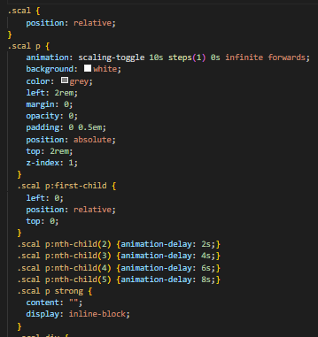

Трансформация
Ранее мы видели, что CSS позволяет нам применять цвета, устанавливать шрифты, изменять настройки текста, позиционировать элементы, задавать для них пространство, украшать их и перемещать.
Преобразования в CSS представляют собой набор функций, которые позволяют определённым образом придавать элементу форму:
- translate: перемещает элемент вдоль трёх осей (х, у и z);
- rotate: вращает элемент вокруг центральной точки;
- scale: изменяет размер элемента;
- skew: искажает элемент.
Трансформация — это изменение вида элемента, к которым относятся следующие визуальные модификации: поворот, масштабирование, наклон и сдвиг. Чтобы сделать трансформацию, к селектору добавляется свойство transform, а в качестве значения пишется функция трансформации и её параметры. В общем виде это записывается так:

Свойства трансформации
Есть три доступных свойства для трансформации:
- transform определяет, какая функция будет применяться (translate, rotate, scale и др.);
- transform-origin позволяет изменять точку начала преобразования (работает как background-position);
- transform-style для настройки 3D.
Обратите внимание, что в отличие от background и border, свойство transform не является сокращённым.
Здесь мы будем использовать только transform.
Не прерывает поток
Чтобы предотвратить неожиданное поведение, трансформируемые элементы не влияют на поток. Независимо от вращения, масштабирования или перемещения, они не будут влиять на другие элементы.
translate
Функция translate() позволяет перемещать элемент в плоскости (по осям х и у). Она принимает либо:
- один параметр: перемещает элемент вдоль оси х;
- два параметра: первое значение для оси х, второе для оси у.
Это похоже на использование относительного позиционирования с помощью значений left и top.
Давайте переделаем нашу замкнутую анимацию с помощью translate, вместо позиционирования left / top:
Помните: transform — это стилевое свойство, translate() — это значение (и одновременно функция), применяемое к этому свойству.
Вы можете использовать translateX() и translateY(), чтобы переместить элемент вдоль только оси х и у, соответственно.
rotate
Функция rotate() позволяет вращать элемент вокруг неподвижной точки. По умолчанию, вращение происходит вокруг центра элемента. Думайте об этом как о грампластинке, которая играет на проигрывателе.
rotate() принимает только один параметр, который является значением угла и определяется в градусах (deg), градах (grad), радианах (rad) или в оборотах (turn) (один оборот эквивалентен полному кругу).
scale
Функция scale() позволяет изменять размер элемента. Она может увеличить или уменьшить элемент. Функция принимает либо:
- один параметр: изменение размеров элемента одинаково по высоте и ширине;
- два параметра: первое значение изменяет размер элемента по горизонтали, второе по вертикали.
Диапазон возможных значений:
- 1: элемент сохраняет свой первоначальный размер;
- 2: элемент удваивается в размере;
- 0.5: элемент уменьшается наполовину;
- 0: элемент в основном исчезает (так как его высота и ширина равны нулю);
- -1: элемент отражается

scale(1): обычный размер
scale(2): двойной размер
scale(0.5): половина размера
scale(0): нулевой размер (невидим)
scale(-1): отражение
Масштаб
Как и для translate(), у функция scale() есть версии для х и у: scaleX() и scaleY(), для изменения размера по горизонтали и вертикали, соответственно.
skew
Функция skew() позволяет искажать элемент, сдвигая его стороны вдоль линий.
Эта функция преобразования используется редко, поскольку её последствия весьма непредсказуемы, а результат не обязательно привлекателен. Тем не менее, давайте посмотрим, как это работает.
Как и scale(), функция skew() принимает либо:
- один параметр: элемент искажается по горизонтали;
- два параметра: первое значение искажает элемент по горизонтали, второе по вертикали.
Как и rotate(), функция skew() принимает только значения угла, такого как градусы (deg).
3D-функции
Мы видели, как функции трансформации работают на плоскости, вдоль осей х и у.
Например:
-
У translate() до двух параметров:
- translate(x)
- translate(x, y)
- translateX() только для оси х
- translateY() только для оси у
Но, для всех этих функций также есть 3D-версии.
Например, для translate() есть версия translate3d(), которая выполняет преобразование в трёх измерениях, а это значит, что она также включает в себя ось z (кроме того существует отдельная функция translateZ).
Параметр z в основном заставляет элемент двигаться ближе и дальше, в зависимости от уменьшения или увеличения значения. Это как увеличение и уменьшение масштаба.
Зелёный блок поднимается на 200px «вверх» по оси z, как будто становясь ближе к нам.
К родительскому элементу требуется применить perspective: 500px, чтобы трёхмерное пространство стало заметным. В качестве альтернативы также может быть использовано transform: perspective(500px).
Функции трансформации
Функций трансформаций довольно много и они делятся по следующим группам: поворот, масштабирование, наклон и сдвиг, а также на двумерные и трёхмерные трансформации. Последние обозначаются добавлением 3d к имени функции. Кроме того, с помощью этих трансформаций можно делать отражение элемента, задавая отрицательные значения параметров у некоторых функций. Все функции комбинируются между собой, позволяя тем самым получить множество новых фигур.